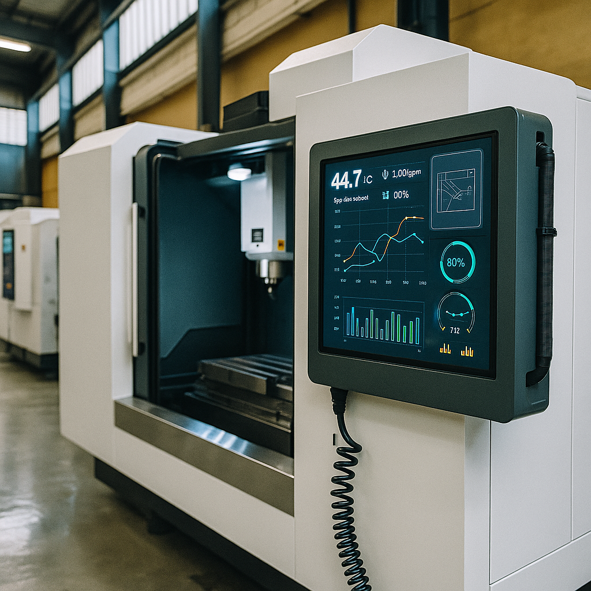

Navigating Uncertainty at PrecisionTech Manufacturing
A Case Study on Operational Excellence Under Randomness in Aerospace Component Manufacturing
Case Overview
PrecisionTech Manufacturing specializes in producing high-precision components for the aerospace industry. Despite implementing Six Sigma and Lean principles, they struggled with inconsistent quality outcomes, with defect rates fluctuating between 3% and 12%. This case explores how they used Bayesian optimization to model and manage the inherent randomness in their production process.
Background
PrecisionTech Manufacturing specializes in producing high-precision components for the aerospace industry. Their manufacturing process requires maintaining extremely tight tolerances, with specifications allowing for only ±0.005mm deviation. However, despite using state-of-the-art machinery and employing skilled operators, they've been experiencing inconsistent quality outcomes, with defect rates fluctuating between 3% and 12% seemingly at random.
The company has implemented various Six Sigma and Lean Manufacturing principles over the past three years, but these traditional approaches haven't fully resolved the unpredictability in their production outcomes. The Operations Director, Sarah Chen, is under pressure to improve consistency and reduce the defect rate to below 2% to meet new customer requirements.
The Challenge
After extensive process mapping and root cause analysis, Sarah's team identified two critical process parameters that significantly influence product quality:
- Temperature of the CNC machine spindle (x₁)
- Cutting fluid concentration percentage (x₂)
Traditional optimization approaches suggested maintaining these parameters at supposedly "optimal" fixed values:
- Temperature: 64.5°C
- Fluid concentration: 8.2%
However, even when operators maintained these values within ±1% of their targets, the outcomes still varied significantly. Standard statistical process control methods failed to explain this variability, leading to frustration among the improvement team.
The Random Process Reality
Dr. Marcus Wei, a process engineer with a background in stochastic systems, pointed out that they were dealing with a fundamental misconception. The relationship between the process parameters and the output quality wasn't deterministic but rather followed a probability distribution that changed based on the input parameters.
This revelation was difficult for the team to grasp initially. They had always learned that if you control the inputs precisely, you should get consistent outputs. The idea that inherent randomness could persist even with perfect process control challenged their traditional understanding of operational excellence.
Bayesian Optimization Approach
To address this challenge, Dr. Wei proposed modeling the manufacturing process using Bayesian optimization techniques. He explained that they needed to:
-
Recognize that the process followed a model similar to:
f(x) ~ N(μ(x₁, x₂), σ²(x₁, x₂))
Where:
- μ(x₁, x₂) was the expected defect rate at given parameter settings
- σ²(x₁, x₂) was the variance in defect rates at those settings
-
The key insight was that both the mean outcome and the variance of outcomes depended on the input parameters.
To illustrate this, Dr. Wei created an interactive visualization showing how different combinations of temperature and fluid concentration affected not just the average defect rate but also its variability.
The Model in Action
The team discovered that their current "optimal" settings (64.5°C, 8.2%) did indeed produce a good mean outcome, but with high variance. This explained why they were getting inconsistent results despite maintaining consistent inputs.
Through experimentation and model refinement, they identified a different region of the parameter space (67.8°C, 7.3%) that produced:
- A slightly worse mean defect rate (2.8% vs 2.5%)
- But with significantly lower variance (0.3% vs 2.1%)
This was a crucial insight: sometimes it's better to accept a slightly worse average outcome if it comes with much greater consistency.
Implementation Steps
Process Analysis & Model Development
Collected historical process data and developed the initial Bayesian model. Identified the key input-dependent mean and variance functions based on temperature and fluid concentration parameters.
Parameter Optimization
Used the model to identify optimal parameter settings that balanced mean performance with consistency. Discovered the trade-off between slightly higher average defect rates and significantly lower variability.
Adaptive Control Implementation
Installed new control systems capable of adjusting parameters dynamically based on real-time data. Programmed decision logic to maintain parameters within the identified low-variance zones.
Training & Mindset Shift
Developed training programs to help operators understand the probabilistic nature of the process. Restructured quality meetings to focus on both means and variances rather than just averages.
Continuous Model Refinement
Established systems to continuously collect new data and refine the Bayesian model. Created automated reporting to track both mean performance and variability metrics.
Results and Impact
Based on these insights, PrecisionTech implemented new process settings and control strategies:
- They shifted their operating parameters to the region of lower variance
- They implemented adaptive control systems that could adjust parameters dynamically based on real-time data
- They redesigned their training programs to help operators understand the probabilistic nature of the process
Six months after implementation:
- Overall defect rate decreased from 5.7% to 2.3%
- Month-to-month variance in defect rates decreased by 78%
- Customer complaints about inconsistent quality dropped by 64%
- The company saved approximately $1.2M annually in reduced scrap and rework
Beyond Determinism
Many real-world processes contain inherent randomness that cannot be eliminated through traditional control methods.
Variance vs. Mean Trade-offs
Sometimes optimizing for consistency (lower variance) is more valuable than optimizing for the best average outcome.
Input-Dependent Uncertainty
Both the expected outcome and the uncertainty around that outcome can depend on process parameters.
Appendix: The Mathematical Model
The process at PrecisionTech was modeled using a Gaussian Process with:
Mean function: μ(x₁, x₂) = x₁² - 2x₁x₂ + cos(x₂)
Variance function: σ²(x₁, x₂) = cos(x₁² + x₂²)
Where:
- x₁ represents the normalized temperature (0 = 60°C, 1 = 70°C)
- x₂ represents the normalized fluid concentration (0 = 6%, 1 = 9%)
This mathematical formulation captures the complex interplay between process parameters, expected outcomes, and outcome variability that characterizes many manufacturing processes.
PrecisionTech Process Optimization Tool
Use this interactive visualization to explore how different parameters affect both the mean defect rate and its variability. The tool models the relationship between machine temperature (x₁) and cutting fluid concentration (x₂) on manufacturing outcomes.
"Seeing this visualization was a breakthrough moment for our team. Finally, we could understand why our process was behaving so unpredictably despite our best control efforts."
— Sarah Chen, Operations Director at PrecisionTechThe green area in the visualization represents the "stability zone" where variance is minimized, even though mean performance might be slightly worse. PrecisionTech ultimately chose to operate in this zone to ensure consistent quality for their aerospace customers.
Discussion Questions
- How might traditional operational excellence approaches like Six Sigma be enhanced to better account for inherently random processes?
- In your industry, what processes might benefit from modeling both the mean and variance as functions of input parameters?
- When is it better to optimize for consistency (low variance) versus optimizing for the best average outcome?
- How could you explain the concept of input-dependent randomness to frontline operators who need to make real-time decisions?
- What organizational challenges might emerge when shifting from a deterministic to a probabilistic mindset in operations management?
Group Assignment
Working in groups of 3-4, develop a comprehensive analysis and implementation plan for PrecisionTech Manufacturing. Your analysis should include:
- A critical evaluation of PrecisionTech's approach to modeling and managing randomness
- An exploration of how the Bayesian optimization model could be extended to incorporate additional parameters
- A detailed implementation plan that addresses both technical and organizational challenges
- Metrics and KPIs for tracking the success of your proposed approach
- A framework for communicating these concepts to different stakeholders within the organization
Your deliverable should include a 10-15 page written report and a 15-minute presentation. Be prepared to demonstrate your understanding of the interactive visualization tool as part of your presentation.
Additional Resources
Readings
- Wei, M., & Chen, S. (2023). "Beyond Averages: Bayesian Optimization in High-Precision Manufacturing." Journal of Manufacturing Excellence, 42(3), 187-203.
- Jackson, R. T. (2021). "Stochastic Process Control: A New Paradigm for Quality Management." Quality Engineering, 33(4), 512-529.
- Montgomery, D. C. (2020). Introduction to Statistical Quality Control (8th ed.). Wiley.
- Rasmussen, C. E., & Williams, C. K. I. (2006). Gaussian Processes for Machine Learning. MIT Press.
Videos
- "Input-Dependent Variance: The Overlooked Dimension in Process Control" (27 min)
- "Visualizing Randomness: Tools for Operational Excellence" (42 min)
- "PrecisionTech Case Study: An Interview with Sarah Chen" (18 min)
Tools & Templates
- Process Parameter Mapping Worksheet
- Variance Analysis Template
- Bayesian Optimization Implementation Checklist
- Operator Training Guide: Understanding Process Randomness